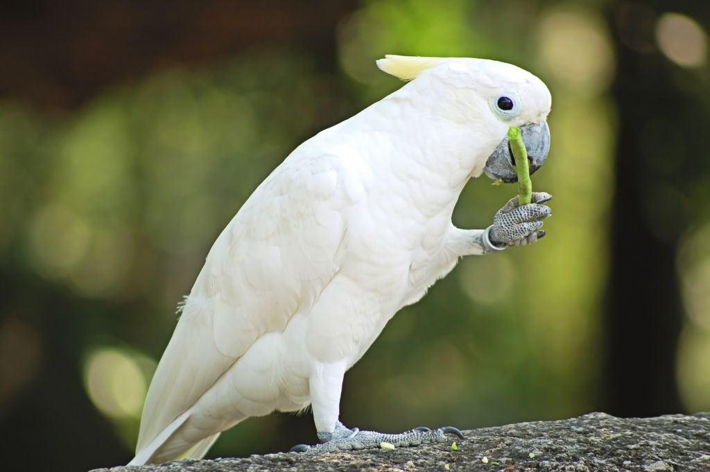
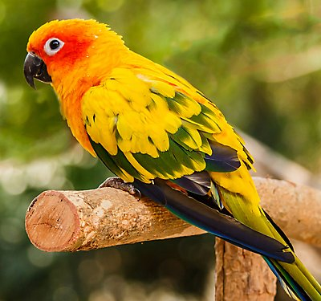
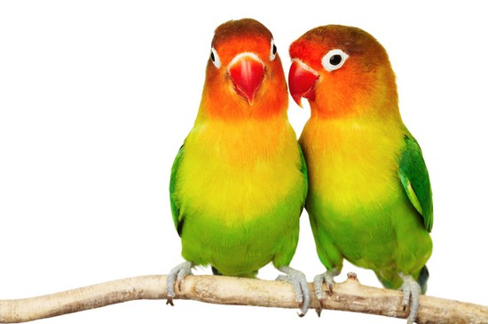

BIRDS



Birds are beautiful, intelligent, sociable and cheerful animals; they bring life, melody and happiness to our home.Intelligent and beautiful,companion birds bring many benefits to their
owners.Some of these benefits might surprise us.Until we’ve lived with a companion bird,it’s hard to imagine how
much birds add to the home with their cheerful,inquisitive natures.Keeping them healthy and happy is a lot of work,but they reward our efforts in so many wonderful ways.Most birds have fairly
long life-spans,as compared to other pets.This means that we won’t need to deal with the grief of losing our friend to old age after just a few years.This often eases the concerns of people
who want to make sure they adopt a pet that they can love and enjoy for a very long time.Pet birds provide life-long companionship.In fact,many of the parrot species can outlive us.Recent
studies have shown that keeping birds encourages social interaction, which is good for our mental health.It’s very cheering to hear our pets greets us with a hearty “Hi! Hello, hello!” when
we come home.Playing with and talking to a pet will lower our levels of stress,and it will also lower our blood pressure.That’s good for our health.Teaching tricks to our bird,of any species,
keeps our mind sharp as well as entertaining our feathered friend.This brain exercise is better than medication in promoting healthy cognitive functioning.Birds are easy to care of.They can be
placed inside their cages when we're busy.Birds are naturally hygienic animals and preen their feathers daily to keep them shiny and clean.Given proper training and socialization,birds can be
every bit as loving and affectionate as a cat or dog. Some pet birds are inseparable from their owners,even accompanying them on daily errands.And birds can be easily trained to do simple
tricks and tasks since they are highly intelligent.Small bird species,such as budgies,canaries and finches are good options for people with limited space.Another of the benefits of keeping birds
is that we can develop a very close relationship.Some kinds of birds can perfectly cohabit without any conflicts with other species,as long as they're kept in big, wide cages.We can also keep
multiple birds from the same species in the same cage.Birds can be restless,playful animals.If they have toys they will have fun for ages and so will we, since watching them play is a real
delight.
PREVIOUS
HOME PAGE